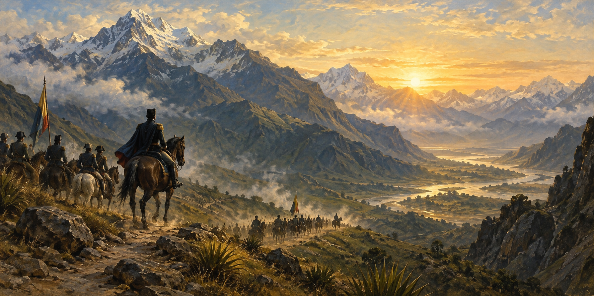

Leader
Profile
Full Name: Simón José Antonio de la Santísima Trinidad Bolívar y Palacios
Date of Birth: July 24, 1783
Place of Birth: Caracas, Venezuela
Nationality: Venezuelan
Marital Status: Widower
Children: None
Current/Final Job Title: Military and Political Leader
Active Years: 1810–1830
Physical
Description
Simón Bolívar was a tall and thin man with dark hair and brown eyes. He usually wore a military uniform because he was an important military leader. He had a serious and determined appearance. He was physically active and spent many years traveling and fighting for independence.
Personality
& Qualities
Simón Bolívar was brave, determined, intelligent, ambitious, charismatic, hardworking, and courageous. He was a strong leader who inspired many people to fight for freedom. He was also persistent because he continued his struggle for independence despite many difficulties and defeats.

Achievements
/ Work
- He helped liberate Venezuela from Spanish rule.
- He played an important role in the independence of Colombia, Ecuador, Peru, and Bolivia.
- He founded the Republic of Bolivia, which was named in his honor.
- He promoted the idea of a united Latin America.
- He became one of the most important leaders of South American independence.
Conclusion:
Why is this person
a great leader?
Simón Bolívar was a great leader because he was courageous, determined, and visionary. He fought for the independence and freedom of several South American countries. He inspired thousands of people and dedicated much of his life to his ideals. His leadership and achievements made him one of the most important figures in Latin American history.